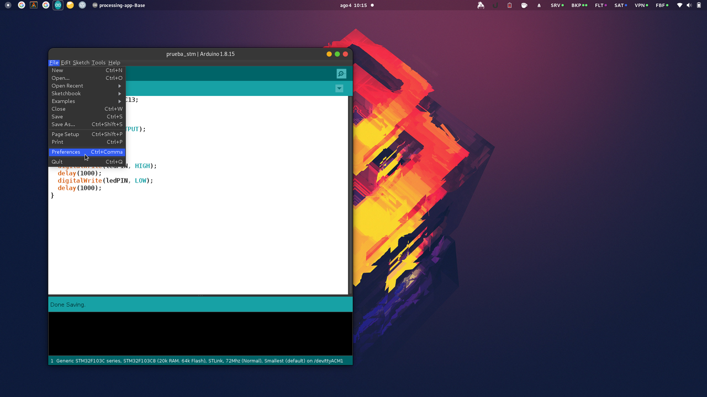
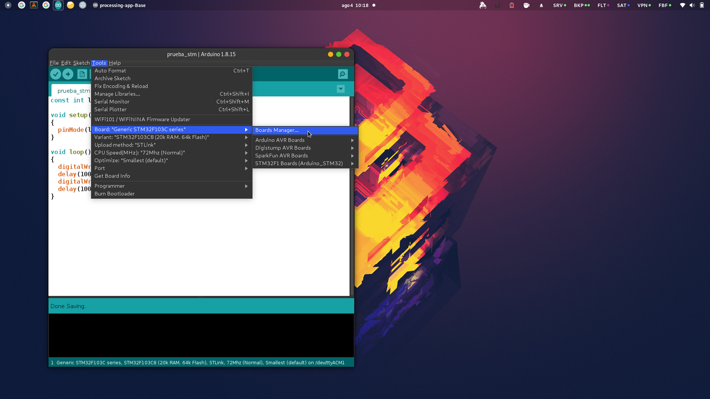
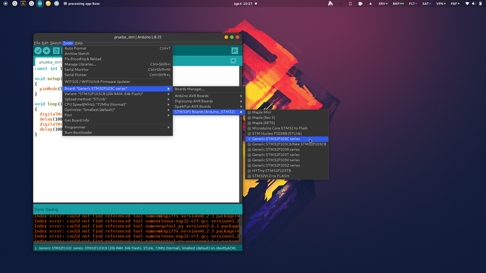
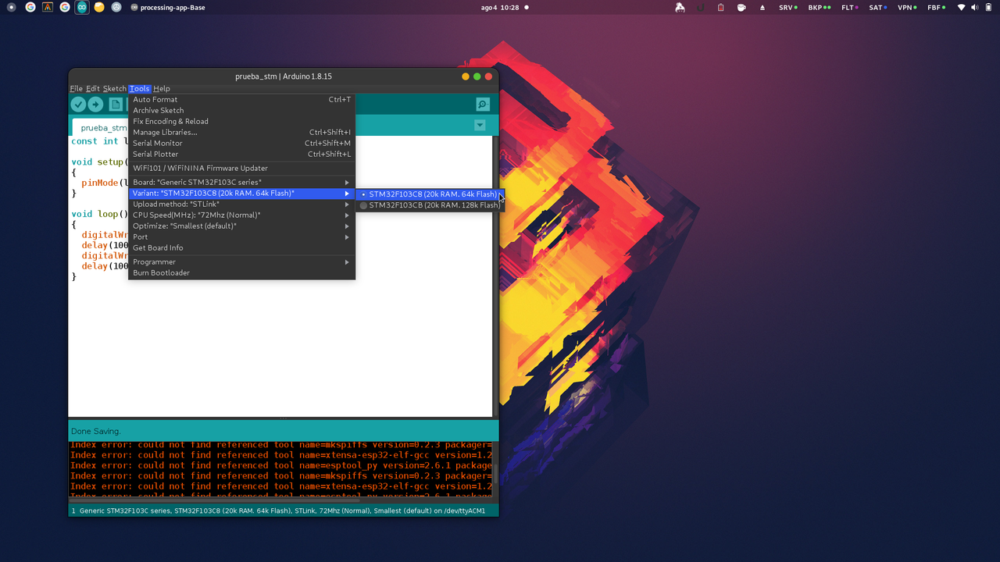
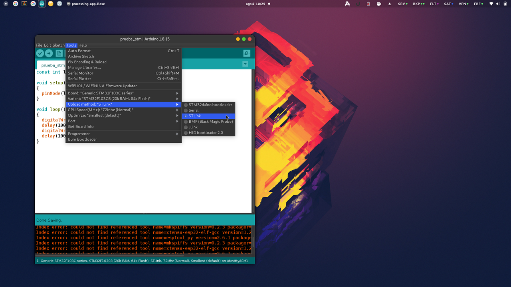

Programar STM32F103C8 en Ubuntu con Arduino IDE
Hacer andar una placa STM32F103C8 (o cualquier STM32 de hecho) con Arduino IDE en Ubuntu no es tan simple, hay muchos tutoriales e info contradictoria en la web.
Esto es lo que en mi caso funcionó, en un Ubuntu 20.04 LTS.
Este tutorial asume que ya tienen instalado Arduino IDE, de una versión relativamente actual.
Paso 1: Agregar soporte de STM32 en Arduino IDE
Lo primero que hay que hacer es instalar los plugins necesarios en Arduino IDE, para que el editor sepa compilar y grabar programas en las placas STM32.
Para ello tenemos que ir al menú "File", opción "Preferences", y en la ventana que se nos abre, clickear el botón que está al lado de Additional Board Manager URLs:

En la segunda ventana que se nos abre debemos agregar la URL de donde Arduino IDE va a bajar toda la información de estas placas. La url es esta:
http://dan.drown.org/stm32duino/package_STM32duino_index.json
Y debe agregarse al final, en un renglón nuevo (si es que ya teníamos otras URLs en esta configuración, como es mi caso), y clickear en "Ok":

Luego debemos decirle a Arduino IDE que se baje desde esa URL la información que necesitamos para controlar nuestra placa STM32. Para ello vamos al menú "Tools", luego "Board", y elegimos la opción "Boards Manager..."
En la ventana que se nos abre tenemos la posibilidad de filtrar la lista de plugins de Arduino IDE. Tenemos que buscar los que nos interesan, escribiendo "STM32" en la caja de búsqueda. Y de los resultados, tenemos que elegir el que dice "STM32F1xx/GD32F1xx boards". Luego de elegirlo nos va a aparecer un botón de "Install" para ese plugin, al que le hacemos click y esperamos que termine el progreso de la instalación.

Cuando termina su instalación, podemos cerrar la ventana del Board Manager.
Paso 2: Elegir nuestra placa y la forma de programarla
Ahora tenemos que decirle a Arduino IDE que queremos trabajar con esa placa nueva que instalamos. Para ello elegimos en el menú "Tools", "Board", "STM32F1 Boards", la opción "Generic STM32F103C series":
Al hacer eso se nos van a agregar algunas opciones nuevas en el menú "Tools", de las cuales tenemos que elegir dos más:
"Tools", "Variant", "STM32F103C8"
"Tools", "Upload Method", "STLink"
Paso 3: Arreglar cosas que no deberían estar rotas
Con los pasos que hicimos antes, en un mundo ideal y con placas más normales, ya todo queda listo para poder programar, hacer click en Play, y que nuestro código corra en la placa que tenemos conectada a la PC. Pero en el caso de las STM32 esto está roto, y hay que hacer algunos pasos manuales para arreglarlo. Los descubrí probando y renegando, y probablemente esto cambie en el futuro.
En particular: el plugin de Arduino IDE para las STM trae dentro un programita que se usa para flashear la placa, llamado "stlink-tools". Pero el problema es que trae una versión vieja y rota (al menos rota en entornos modernos).
Así que lo primero que vamos a hacer, es eliminar esa versión vieja de ese programita que no sirve de dentro del plugin. Lo hacemos corriendo este comando en una terminal de linux:
rm ~/.arduino15/packages/stm32duino/tools/stm32tools/2021.5.31/linux/stlink/st-*
Si el comando dispara un error diciendo que los archivos no existen, lo más probable es que tengan alguna versión diferente o de Arduino IDE, o del plugin. En ese caso van a necesitar encontrar cuál es la ruta para el caso particular de ustedes (probablemente si es otra versión de Arduino IDE, cambie el nombre del directorio .arduino15, o si es otra versión del plugin, cambie el nombre del directorio 2021.5.31).
Una vez borrados esos archivos, tenemos que instalar una mejor versión de la herramienta "stlink-tools". Hacemos eso con este comando:
sudo apt install stlink-tools
Esperamos a que termine de bajar e instalar, y luego tenemos que hacer un último pasito: indicarle a Arduino IDE que use nuestro nuevo stlink tools. Para ello corremos estos tres comandos. Pero ojo!! La ruta que estamos usando acá tiene que ser la misma que la que usamos antes para borrar el viejo stlink tools del plugin. Si cambiamos algún nombre de directorio en el paso de borrado, acá también deberíamos cambiarlo de la misma forma:
ln -s /usr/bin/st-flash ~/.arduino15/packages/stm32duino/tools/stm32tools/2021.5.31/linux/stlink/ ln -s /usr/bin/st-info ~/.arduino15/packages/stm32duino/tools/stm32tools/2021.5.31/linux/stlink/ ln -s /usr/bin/st-util ~/.arduino15/packages/stm32duino/tools/stm32tools/2021.5.31/linux/stlink/
Listo!
Con estos pasos hechos, ya deberíamos poder hacer un programa de ejemplo en Arduino IDE, y al apretar el botón de play (la flecha hacia la derecha) nuestro programa debería ejecutarse en la placa :)
Un programa de ejemplo que vi usado en muchos de los tutoriales (desconozco su autor original, si no lo linkearía):
const int ledPIN = PC13; void setup() { pinMode(ledPIN, OUTPUT); } void loop() { digitalWrite(ledPIN, HIGH); delay(1000); digitalWrite(ledPIN, LOW); delay(1000); }
Si todo anduvo bien, al dar play el led verde de nuestra placa STM32F103C8 debería titilar exáctamente cada 1 segundo :)
Comments
Comments powered by Disqus